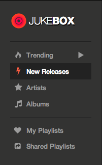

4 years ago, when I opened Channel i for the first time, I saw a tiny box at the top. It looked like my windows file explorer and had a lot of folders. As I explored, I found that those folders were albums and I could select and play a song just as I would do on my computer. It was called Jukebox and it was one of the interesting bits of Channel i at that time.
Back in 2012, when Channel i was rethought and built from scratch, that version of Jukebox was depricated. We knew that eventually we will build it again but we were not quite sure what we wanted it to be.
The vision of Jukebox was not clear and I had decided that I wanted to design it. So, I looked around a lot of music apps and websites and tried to throw together something. I started with the homepage. We knew that we wanted the homescreen to display a collection of great music. It was not quite clear yet whether it would be new releases or trending songs or most popular.
An early design of Jukebox homepage
In 2013, we finally decided to start giving shape to the new Jukebox. We knew that that it was not going to be a walk in the park and it was going to ask for a lot. With Himanshu, Pankaj and myself, we assembled the dream team for this project.
Key Decisions
From the very beginning I decided to focus only on product design and put visual design and branding on the back burner. I really wanted to materialise the vision that I had of jukebox and build as much as I could as soon as I could which we could refine further.
The choice of tools - Earlier, I used to open photoshop and start painting what I had in my mind and then jump to browser to build it and go back sometimes but I decided to start with what I had already made in photoshop and try to implement it in browser with Himanshu and try to refine it as we go. It actually proved to be very fast and we knew exactly what we were building.
I made it very clear to be ready to kill features. It's very important to be ready to make improvisations as you go, add something if it needs to be added, lose something if it doesn't add value and iterate until you have a solid product.
The Beginning
When we started working on jukebox, I had a pretty good idea what I wanted Jukebox to be. It would be a really cool place to discover great music. And we didn't want it to resemble anything it had been so far. By then, the design had evolved.
We knew the basic components we wanted in Jukebox.
Homepage that shows the top 50 trending songs.
A list of artists. When I select a particular artist, it must show me all the the albums of that artist.
A lists of all albums.
Search.
And of course a player with all the basic functions.
The Homepage
We zeroed in on Trending. The homepage would show that top 50 trending songs at all times. This seemed more dynamic than "all time popular" as the song needs to be played repeatedly in order for it to maintain it's spot.

Artists
The artist view in earlier design was just a list of artists in alphabatical order and when you would select a particular artist you would be taken to that artist's page.
Artists' list
 Artist's Page
Artist's Page
As the design evolved, we clubbed the two views together as it would save the user the trouble of going back and forth between the two views and make it easier to navigate through artists.
The New Artists' View
Albums
The layout of albums in Albums view was kept asthetically the same as that of albums listed in the artist page but with a larger album art because why change something unnecessarily? and it would make a lot of code reusable.
We used the same navigation technique with albums as with artists. The alphabatical list of various albums is present on the left and when an album is selected it open on the right.

The Play Queue - A More Human Approach
We didn't want the user to get into the specifics of how the play queue works. We wanted the play queue to work according to the choice of the user - that is when does she want to play a song. Should the song be played now or after the current song ends or after you're done listening to all the songs currently in the list?
So in effect, the user gets three options to add a song the the queue.
Play now
Play next
Play Last
Select one of these options and the song will be queued accordingly.
Losing The Header
We got rid of the conventional header at the top. We were using high resolution cover images for artist pages and huge albums arts. As we already had the player fixed at the bottom, having a header at the top made everything appear dwarfed.
If we would have a header it would primariliy serve as the space for the logo, the searchbar and user options.
 According to the earlier design
According to the earlier design
We decided to place the logo on the top-left in the main navigation menu on the left. It would be at it's place. It just won't be placed on a header.

We gave the rest of the functionality such as search and user options in the the main player at the bottom.
Search
So, we made a huge tradeoff by losing a conventional, big, simple looking fixed seachbar at the top when we decided to lose the header. Now, the search bar was nowhere to be seen except for a small search icon on the bottom player.
But once you clicked the search icon you got this entire screen for search on which you had to just start typing and it would look for songs, albums and artists. It had to be fast and the user must get the desired result on the quick results window itself.
As we didn't really have any other input fields on the entire app except for search, we thought,"why not start searching for results whenever the user starts typing"! It would be as simple as thinking. As soon as you think of a song, just start typing it and jukebox will search it for you. No need to reach for search field. And you go back to the previous view by pressing Esc so that you don't have to move from your keyboard.
Playlists
One can make collect her favourite music in good old playlists and can also make her playlist public to share some good music with others. Some things are best kept as they are.
Key Takeaways:
Process Is Just Process
The best process is the the one that suits you. The best tools are the ones you are fastest with. The thing that matters is to hold the vision and to know how to build it. Which way you take, doesn't really matter.
Say No To Most Things
Yes, one of the most important things I learned. As you start to get something in shape and it starts to come together, it's very easy to get excited and lose your vision and hence the core value of the product. It's very imporant to make sure that whatever it is that you're building is not trying to do too much. When you started building it, you had that one problem in mind that it would solve. Keep that in vision.
Work Closely
It's difficult to work at a distance. It's extremely important that everyone on the team is on the same page. It also makes it easier to quickly iterate on something you've built. Work closely. It helps a great deal.
Design a Lot of Stuff and Throw a Lot of it Away
When I started designing jukebox, one day I would throw together something in photoshop and the next day I would think, "This is just stupid! What was I thinking!" and I would throw it way. I would try something else the next day. It's really important to sleep on it. It helps you envision what you want to build and more importantly what you don't want to build.